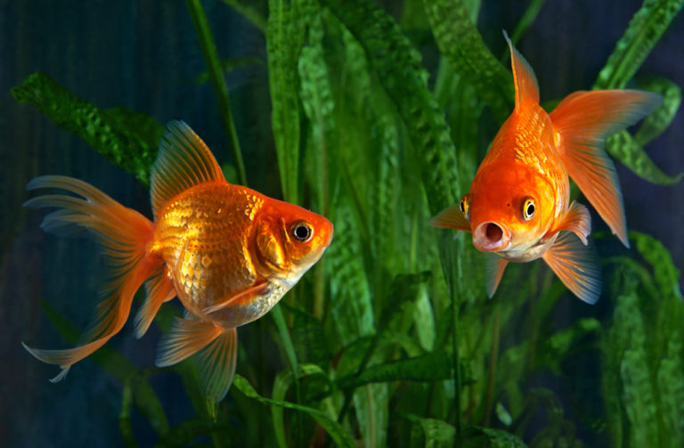
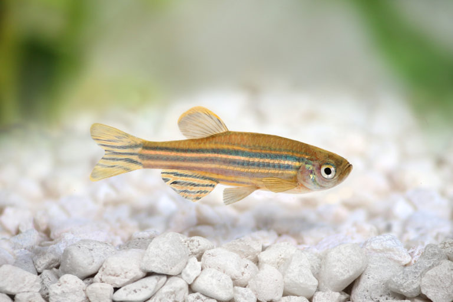
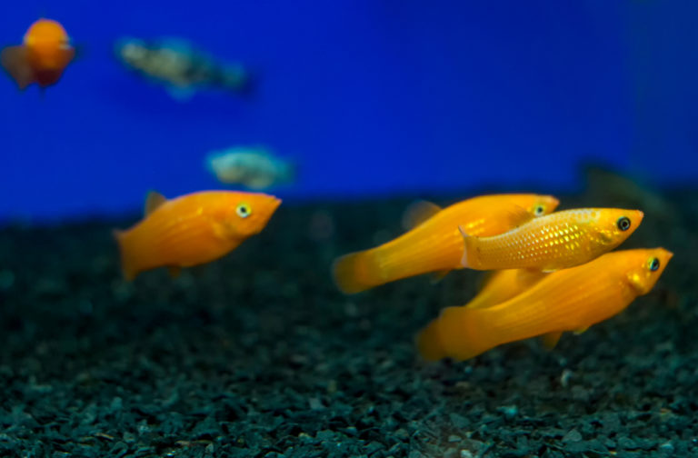
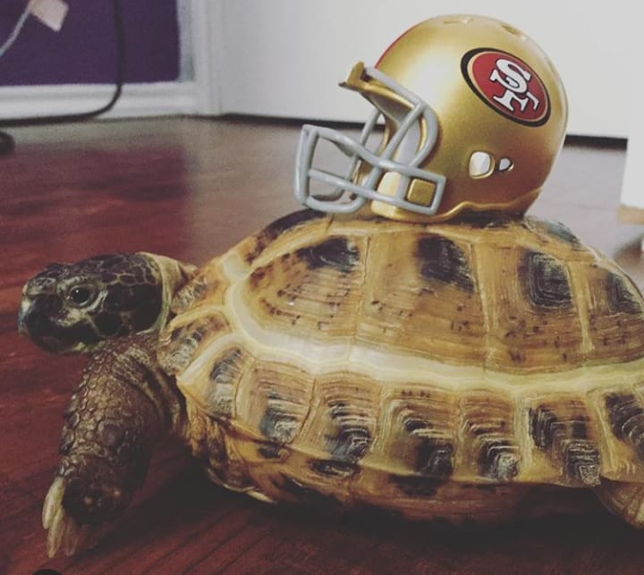
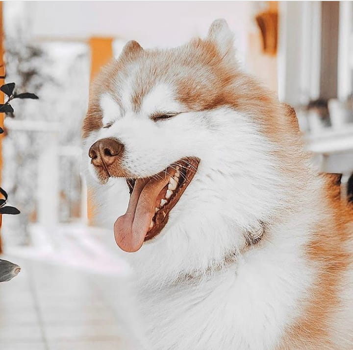
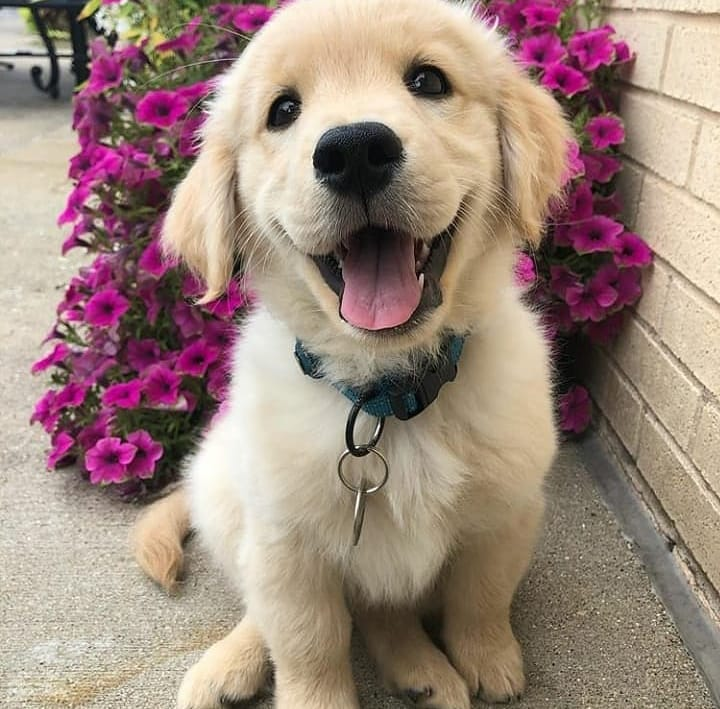

|  |
Goldfish
Highly popular freshwater fish,
the Goldfish is a beautiful species
that can grow up to 14 inches long in the wild.
Some wild goldfish can live up to 25 years or even longer!
In captivity, your pet Goldfish will thrive in a tank that’s at least 20 gallons.
These fish need constant maintenance,
such as weekly water changes and filter.
Goldfish can come in
various shapes, sizes, colors, and breeds
|
Zebra Danios
The perfect fish for beginners,
the Zebra Danios is small and low maintenance fish
that typically grows up to 5 to 7 cm.
Because they’re schooling fish, they need to be kept in groups,
otherwise, they will become very stressed.
Zebra Danios love eating worms, insects, and crustaceans,
They can also be fed the typical fish flake food,
though we recommend spicing up their diet.
These fish critters are known for jumping out of tanks,
so be sure to keep your tank covered
|  |
|  |
Mollies
Small and easygoing,
Mollies are a great freshwater species that are easy to take care of.
Mollies can grow around 3 to 4 inches long and are omnivorous,
which means they can eat plants and other animals.
What’s cool about this freshwater critter
is that they give birth to their babies,
unlike other fish.
Like Guppies, Mollies love to breed
so if you don’t want lots of these beautiful fish in your tank,
just keep one gender.
|
The best tortoise to keep indoors:
Russian one
Though you can easily keep it
inside and outside your house,
it is one of the best
tortoise species to keep indoors.
If you like an energetic, active pet,
then you wouldn't go wrong with a Russian tortoise.
Russian tortoises hibernate
when they are in their natural habitats.
To keep a tortoise indoors,
You'll Need
:A large enough enclosure.
Lamps that emit heat and UV light. ( For indoor enclosures)
Well-balanced foods.
Water to soak/bathe the tortoise,
to maintain their enclosure's
humidity and to keep the substrate underneath moist.
Hiding/sleeping place(s) for them.
A water dish.
|  |
|  |
Siberian husky
very active dogs with huge amounts of energy.
Finding the best dog food for huskies
involves knowing what the breed needs and why.
These dogs are not picky eaters
but have certain traits that sometimes complicate the feeding.
They will not eat
if they feel full and they prefer to eat after exercise.
They can become bored with a type of food
and if they have been sick at some point,
that may well stop them eating
that particular food ever again.
Choices food:
-Wellness CORE Natural Grain Free Dry Dog Food
-Blue Buffalo Life Protection
-Orijen Original Dry Dog Food
|
Golden Retrievers
Somewhere between 9 and 12 months of age,
your retriever reaches full adult height.
It'll take them an additional 6 months to grow out
to full size.
It can take them even more time to mature mentally.
But we're sure you don't mind their silliness
Best Dog Food for Golden Retrievers of 2019:
Blue Buffalo Wilderness Adult Duck Recipe Dry Dog Food. ...
Natural Balance Limited Ingredient Diet Dry Dog
Food Sweet Potato and Fish Formula.
Royal Canin Golden Retriever Puppy Dry Dog Food.
Merrick Grain-Free Real Buffalo and Sweet Potato Recipe.
|  |